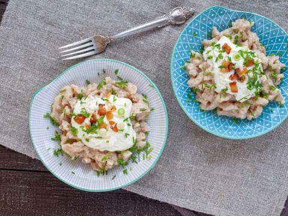
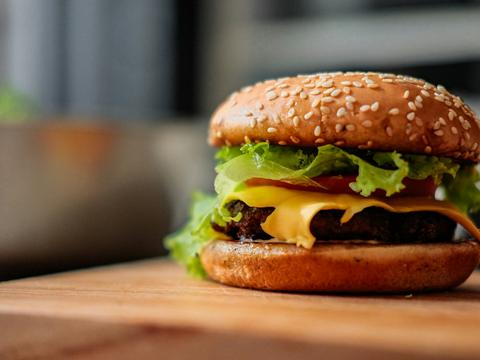
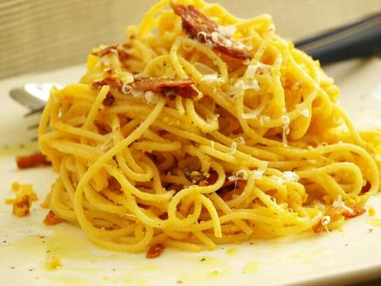

Hledat a filtrovat
-

Bryndzové halušky 40 minStřední -

Náš receptHamburger 30 minSnadné - Kuřecí řízek 40 minSnadné
- Palačinky 1 h 15 minSnadné
-

Špagety carbonara 35 minSnadné
Žádný recept neodpovídá filtrům.